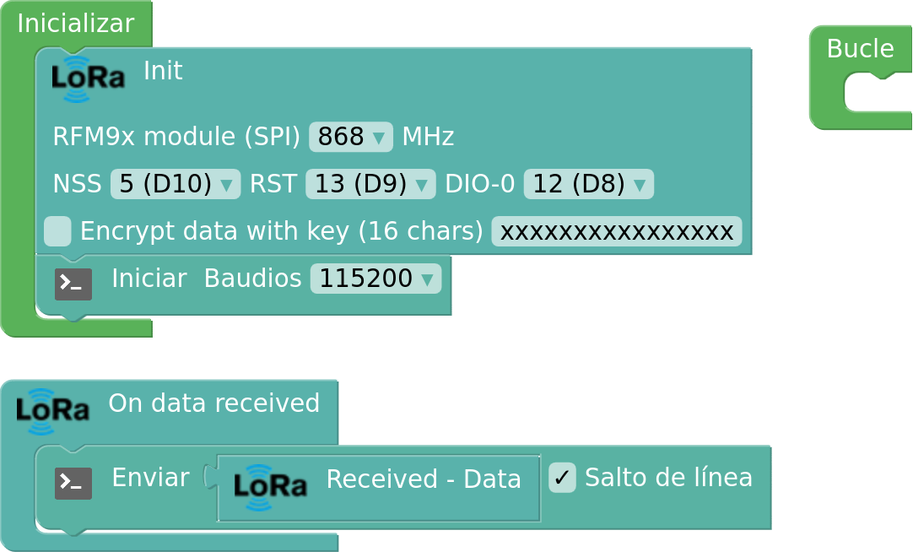

Conexionado
El receptor es una ESP32 STEAMakers que sólo lleva conectado un módulo LoRa. A su vez la placa debe estar conectada por USB al ordenador.

El receptor es una ESP32 STEAMakers que sólo lleva conectado un módulo LoRa. A su vez la placa debe estar conectada por USB al ordenador.
El programa lo que establece es una comunicación con el módulo LoRa emisor, e inicia una comunicación serie por el cable usb hacia el ordenador, en nuestro caso a 115200 baudios (bits/s). Cuando recibe un dato LoRa, lo envía al ordenador. En el ordenador esos datos serán tratados como veremos posteriormente.

Una vez la placa con su receptor LoRa está enviando datos al PC, éste debe tener un programa lector de puerto serie, que permita grabar los datos en un fichero, para esta tarea en GNU/Linux proponemos usar Serial Port Terminal (GTKTerm). Además vamos a utilizar un graficador en tiempo real llamado KST, que recogerá los datos del fichero grabado por gtkterm y en tiempo real los graficará.
El proceso completo está explicado en el siguiente vídeo:
En desarrollo
Obra publicada con Licencia Creative Commons Reconocimiento Compartir igual 4.0